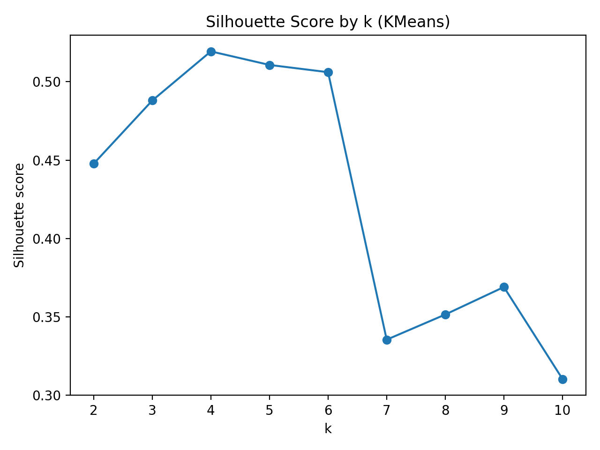
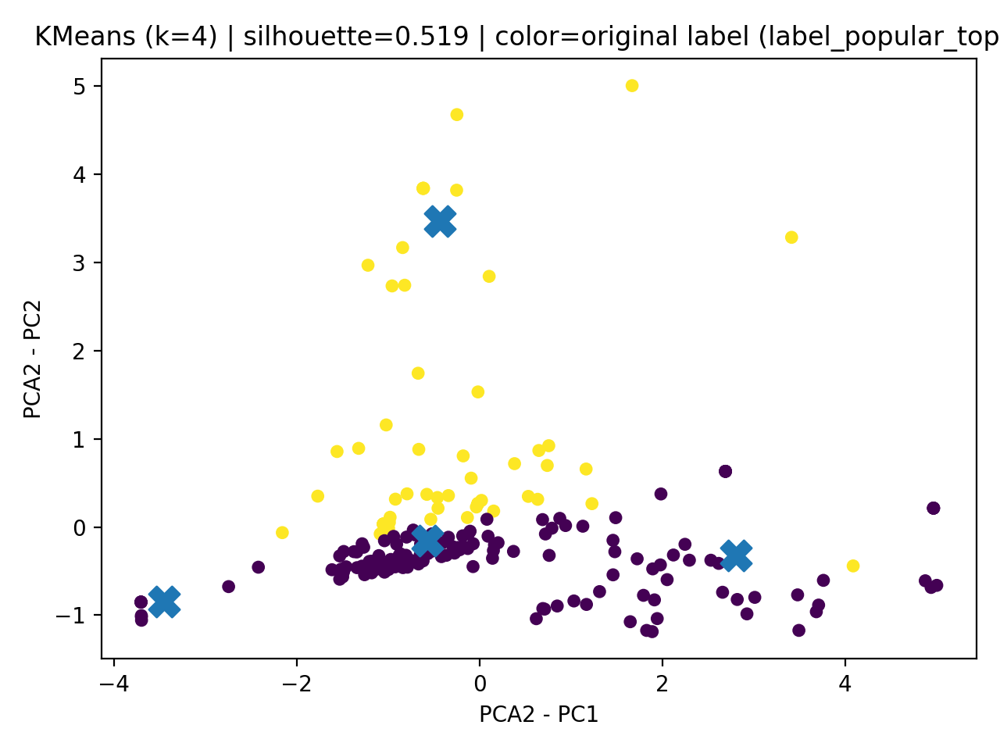
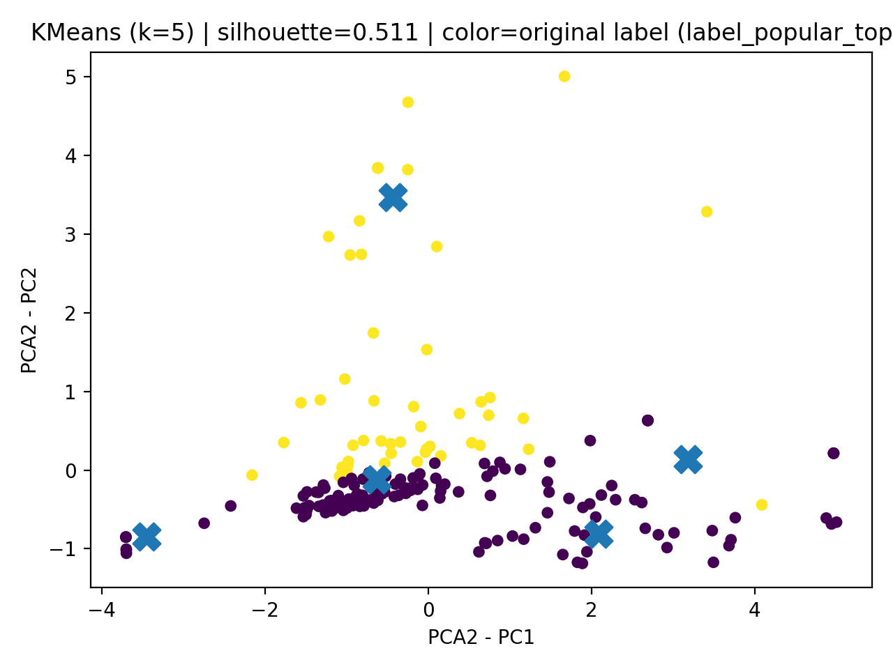
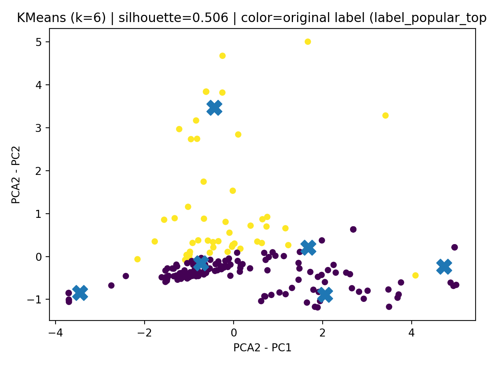
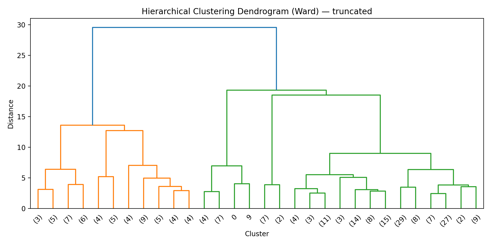
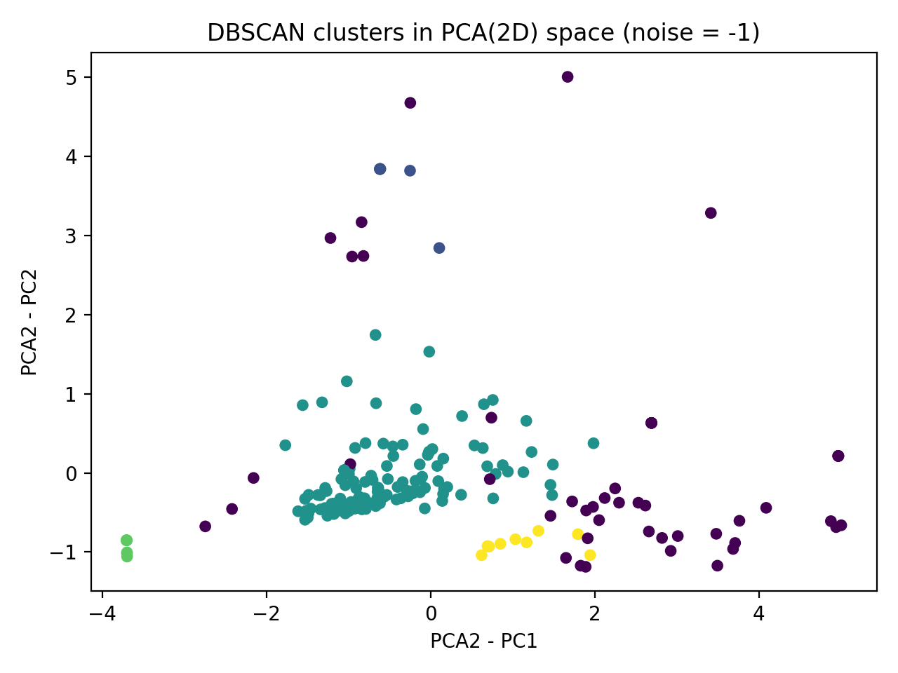

KMeans (partition clustering) assigns each point to one of k clusters by minimizing within-cluster variance. It is fast and works well for roughly spherical clusters, but requires choosing k in advance and is sensitive to scaling and outliers.
Hierarchical clustering builds a tree (dendrogram) that shows how points merge into clusters as the distance threshold increases. This provides insight into structure at multiple levels, but can be more computationally expensive. The clustering result depends on the linkage method (e.g., Ward linkage).
DBSCAN (density clustering) identifies dense regions of points and labels sparse points as noise.
It can find non-spherical clusters and does not require choosing k, but performance depends on
selecting sensible eps and min_samples.
A labeled dataset was prepared for clustering by removing the label column and keeping only quantitative features. The resulting numeric-only dataset was standardized using StandardScaler so each column has mean 0 and standard deviation 1. PCA was then used to reduce the standardized data to 2D for visualization and to keep clustering plots interpretable.
PCA reduction is used only for plotting and interpretation. Clustering is still performed on normalized numeric features, ensuring no single feature dominates due to scale differences.

k. The three selected values are k = 4, 5, 6.





-1). This approach is useful when clusters are not spherical.
Clustering helps reveal whether the numeric success-related features naturally form groups of movies. The PCA-based plots suggest a large dense core with smaller separated groups and some outliers. KMeans provides a clean partitioning view, hierarchical clustering provides a tree-based view of structure, and DBSCAN highlights dense regions while isolating sparse points as noise. These groupings support the core project goal by identifying profiles of movies that tend to cluster together based on budget, revenue, popularity, and related attributes.